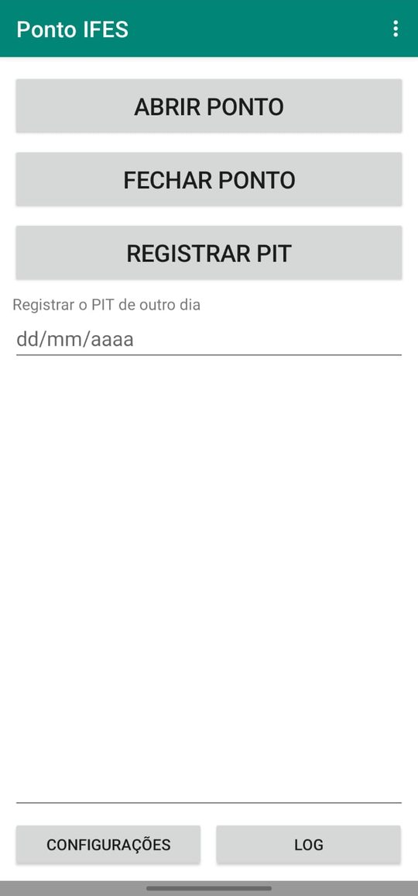
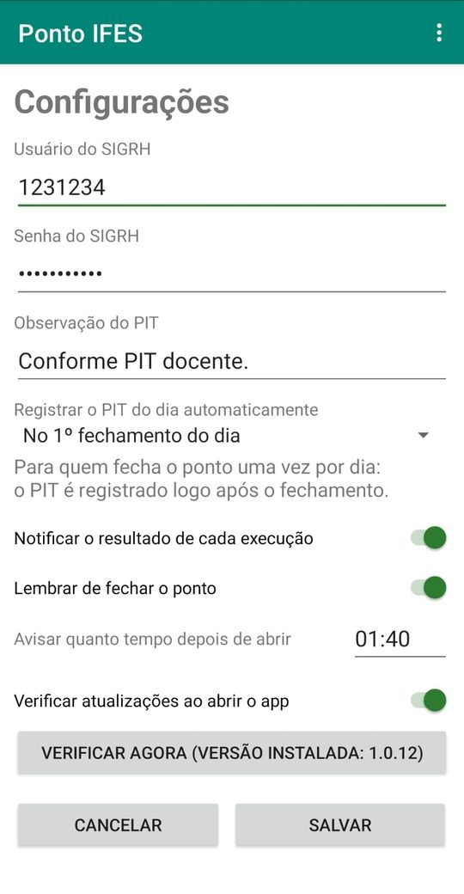
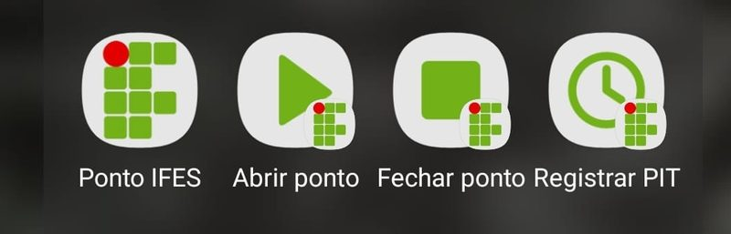

Ponto IFES
Abra e feche o ponto e registre o PIT no SIGRH com um toque, direto do celular.
Baixar o app (APK)Para Android. Ver todas as versões
Instalar
- No celular, toque em Baixar o app acima.
- Abra o arquivo baixado. Se o Android pedir, permita que o navegador (ou o gerenciador de arquivos) instale apps.
- Se aparecer um aviso do Play Protect dizendo que o app é desconhecido, toque em Mais detalhes e depois em Instalar mesmo assim. O aviso aparece porque o app não vem da Play Store.
Para atualizar, baixe e instale a versão nova por cima. Suas credenciais continuam salvas.
Primeiro uso
Na primeira vez, o app pede seu usuário e senha do SIGRH. Eles ficam guardados só no seu celular e podem ser alterados depois em Configurações.
O Android também pergunta se o app pode enviar notificações: toque em Permitir. Algumas funções podem ser ativadas a partir das notificações. Veja seção Notificações abaixo
Tela principal

- Toque em Abrir ponto, Fechar ponto ou Registrar PIT. O andamento aparece na tela. Abrir e fechar o ponto só funcionam com o celular conectado à rede da escola.
- Para registrar o PIT de um dia que passou, preencha a data em Registrar o PIT de outro dia antes de tocar em Registrar PIT. Em branco, vale a data de hoje.
- O PIT só é registrado de segunda a sexta. Para o PIT de hoje, feche o ponto antes.
- Log mostra o histórico de execuções, com data e hora. Use Copiar para mandar o log para mim se algo der errado.
- No menu de três pontos, Sobre o Ponto IFES mostra a versão instalada e o endereço deste site.
Configurações

- Usuário e senha do SIGRH: as credenciais usadas em todos os registros.
- Observação do PIT: o texto que vai no formulário do PIT. O padrão é Conforme PIT docente.
- Registrar o PIT do dia automaticamente: o app registra o PIT sozinho logo depois de fechar o ponto. Escolha No 1º fechamento do dia se você sempre fecha o ponto uma vez por dia, ou No 2º fechamento do dia se sempre fecha no almoço.
- Notificar o resultado de cada execução: liga ou desliga as notificações com o resultado.
- Lembrar de fechar o ponto: se o ponto foi aberto e não foi fechado no tempo escolhido (padrão 01:40), o app avisa com uma notificação, mesmo fechado. O aviso pode chegar alguns minutos depois com o celular em repouso, e não vale se o celular for reiniciado.
- Verificar atualizações ao abrir o app: avisa quando há versão nova para baixar. Verificar agora consulta na hora.
Notificações
Ao terminar cada registro, o app mostra uma notificação dizendo se deu certo. Algumas trazem um botão:
- Tentar de novo, quando algo deu errado: repete o mesmo registro.
- Fechar ponto, no lembrete de ponto ainda aberto.
- Registrar PIT, depois de fechar o ponto: registra o PIT do dia. Não aparece se o PIT automático estiver ligado.
Atalhos na tela inicial
Segure o ícone do Ponto IFES para ver os atalhos Abrir ponto, Fechar ponto e Registrar PIT. Tocar num deles já executa a ação. Para deixar um atalho fixo na tela inicial, arraste-o para lá.

Cada atalho tem o próprio símbolo: play para abrir, stop para fechar e relógio para o PIT.
Configurar Ações Automáticas com Apps de Terceiros
Você pode usar apps de automação como o Tasker ou Modos e Rotinas da Samsung para o celular registrar o ponto sozinho, por exemplo ao chegar no Wi-Fi do campus ou num horário fixo.
Modos e Rotinas da Samsung
Crie uma rotina com a condição que quiser (Bluetooth, Wi-Fi, horário). Na parte do que fazer, adicione a ação de abrir um app e escolha um dos atalhos do Ponto IFES: Abrir ponto, Fechar ponto ou Registrar PIT.
Tasker
- Na tarefa, adicione a ação App > Executar app e escolha o Ponto IFES.
- No campo Dado, escreva
abrir_ponto,fechar_pontoouregistrar_pit. - Marque Sempre Iniciar Nova Cópia. Sem isso, se o app já estiver aberto, ele só aparece na tela e não registra nada.